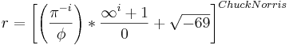
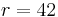
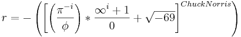

De: La Frikipedia, la enciclopedia extremadamente seria.
De: La Frikipedia, la enciclopedia extremadamente seria. De: La Frikipedia, la enciclopedia extremadamente seria.

|
Hace muchos años, muchos muuuuuuuuuchos pero que muuuuuchíííííííííísimos años, allá por el 69 D.C.N., un pueblo al que todos judían se judió aún más por culpa de Esto originó un odio irracional de hitler a todos los de este noble pueblo que defiende su país con todo el derecho del mundo, ya que el chiste de |

|
El 5 por el culo te la hico, no confundir con 101 por el culo te la hinco, puede ser muchas Cosas como el número de veces que te pajeas al día una S mal escrita, el camino que sigue tu polla al llegar al coño al corral, tu último resultado en un test de C.I., un nombre original para una televisión o simplemente una forma fácil de hacer rimas.
Necesitas un lápiz, bolígrafo, pincel, pluma, o bolígrafo rojo. Es mejor que utilices el bolígrafo rojo porque es más bonito (los otros son para rellenar). Primero lo afilas bien y pones sal en la punta para que la tinta roja se desplace en abundancia y con rapidez. Si eres tía te jodes o compras un consolador porque no tienes bolígrafo rojo .
Bueno, ya tenemos bolígrafo rojo preparado y listo para correrse despegar, si no lo tenemos se lo pedimos educadamente al vecino. Si no tienes vecinos porque te los has cargado o simplemente huyeron de ti al verte, cógelo de un animal salvaje.
Ahora cogemos el bolígrafo rojo con las dos manos y con mucha fuerza lo apretamos contra un papel. Si en este momento sientes un dolor infernal, es normal, es cosa de tu imaginación hiperactiva así que no te asustes y sigue apretando... QUE TE HE DICHO? SIGUE APRETANDO!.
Tras apretar durante unas dos horas, igual no nos queda tinta y tenemos que coger otro bolígrafo, pero supongamos que si que tenemos. Tenemos que hacer un movimiento de semicírculo invertido según ésta sencilla fórmula:

O más fácil aún:

Bieeen! Ya hemos hecho la mitad de la S, ahora para hacer la otra mitad tenemos que repetir la fórmula anterior sólo que invertida:

O más fácil aún:
Miras a la izquierda (si si, a la izquierda de la página) y donde veas 5 por el culo te la hinco estrellitas le das a la de más a la derecha.
Contras: no consigues escribir 5 por el culo te la hinco pero...
Pros:me das una puntuación de 5 por el culo te la hinco!
Cero,
te la mete el camionero
y te llega hasta lo más hondo
de tu sucio e inmundo trasero
Uno,
Te la meto
te la meto
como ninguno.
con orgullo
A tu madre le gusta
por tu coño
y a mi me asusta
cojonudo
Dos,
Te la meto
y me entra la tos
y a tu madre
se la mete mi compadre
Tres,
Por el culo
del revés
te la meto
y no me ves
Cuatro,
Por el culo
es más barato
y si te empeñas
te folla un gato
Cinco,
por el culo te la hinco
y a tu madre me la trinco
de un brinco
y como rima
me tiro a tu prima
y como sigue rimando
me la sigo tirando.
Seis,
por el culo te la meto
y seguro que las estrellas veis
de aquí a treinta años
follar no podréis
Siete,
por el culo
se te mete
y va y te sale
un juanete
Ocho,
Por el culo
te la embrocho
y si abres la boca
te huele a chocho
Nueve,
Por el culo
se te mueve
y a Chuck Norris
nadie le puede
Diez,
Por el culo
se te ve una hez
te pareces a un pez
y te la meto otra vez
| Metete aquí
| Hay personas malas, malas...
| Segun la kiwipedia, 5 es...
| |
|
Álgebra y Aritmética
Estadística
|
Autor(es):